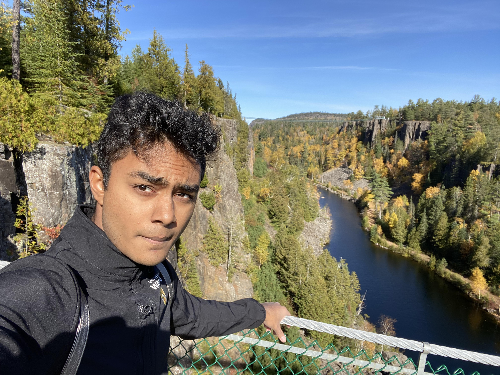
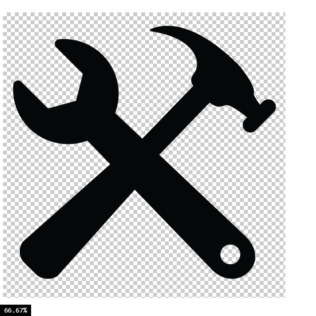
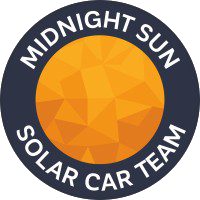
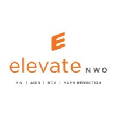

About Me

Hello there! My name is Smile Khatri and I am a 1B Mechanical Engineering student at the University of Waterloo. I am passionate about mechanical systems and clean energy technologies. For my undergrad, I am looking forward to various co-op opportunities and learn important skills and life lessons from industry experts, my instructors, and peers. During my freetime, I love rock climbing, playing soccer, working out, and learning new skills. Fun fact, I can play the guitar!
-
 Python
Python- Machine Learning
 C++
C++ HTML
HTML CSS
CSS
Software skills:
-
 SolidWorks
SolidWorks AutoCAD
AutoCAD
Machine shop tools- GD&T
Mechanical skills:
Experiences
-
Natural Resources Canada
Renewable and Electrical Energy Intern [January 2023 - Present]
- Consolidated government and private sector relations by composing high level meeting dockets for senior government officials.
- Collaboratively developed training sessions about the electricity sector and emerging technologies, resulting in over 60 virtual participants.
- Evaluated multiple applications for government grants relating to clean energy projects across Canada.
-

MidNight Sun Solar Car Race Team
Aerobody Core Member [September 2022 - Present]
- Used FEA simulations in SolidWorks to iteratively design the floor panels of the solar car.
- Organized consultation sessions with industry experts to expand the knowledge of the team regarding vacuum infusion processes.
- Working to optimize the surface area of carbon fiber for vacuum infusion process by identifying optimizing shapes and area to reduce the amount of carbon fabric used.
-

Elevate NWO
Receptionist and Social Service Provider
- Commended by multiple staff members for strong work ethic for efficient reception service and maintaining an organized agency environment.
- Tracked the supply of food in the care center that improved the organization of the workplace.
- Served local clients by catering meals and through delievery drives around the Thunder Bay community to distribute groceries and other essentials.